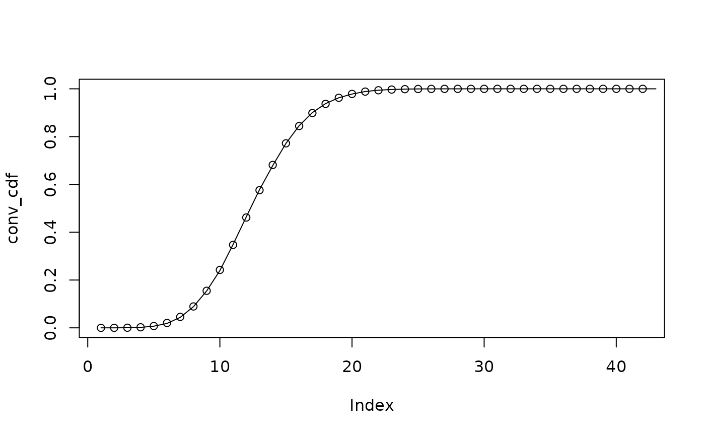

This function allows the addition of probability mass functions (PMFs) to produce a new PMF. This is useful for example in the context of reporting delays where the PMF of the sum of two Poisson distributions is the convolution of the PMFs.
See also
Helper functions for model modules
add_max_observed_delay(),
convolution_matrix(),
enw_reference_by_report(),
enw_reps_with_complete_refs(),
extract_obs_metadata(),
extract_sparse_matrix(),
latest_obs_as_matrix(),
simulate_double_censored_pmf()
Examples
# Sample and analytical PMFs for two Poisson distributions
x <- rpois(10000, 5)
xpmf <- dpois(0:20, 5)
y <- rpois(10000, 7)
ypmf <- dpois(0:20, 7)
# Add sampled Poisson distributions up to get combined distribution
z <- x + y
# Analytical convolution of PMFs
conv_pmf <- add_pmfs(list(xpmf, ypmf))
conv_cdf <- cumsum(conv_pmf)
# Empirical convolution of PMFs
cdf <- ecdf(z)(0:42)
# Compare sampled and analytical CDFs
plot(conv_cdf)
lines(cdf, col = "black")
